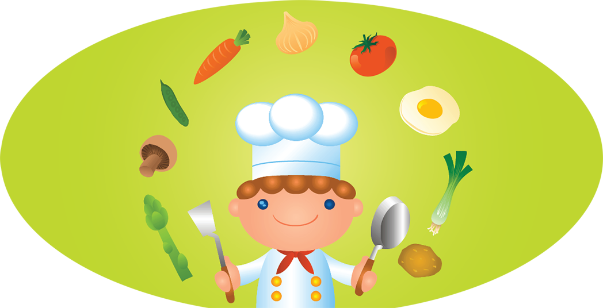

Smart cooking tips


Food is healthy if nutrients are preserved during cooking. Cooking tips given below will enhance the nutritive value of your food.
Cooking
- You may need to cover some of the food while cooking to prevent nutrient loss and retain taste and flavor, but in certain cases, cooking utensils should be kept open e.g. cooking of manioc
- Stirring and sieving should not be prolonged, because air is incorporated into food which destroy vitamin C
- Most food should be cooked till it is done because it is only then that it gives its flavor and is digested well (rice, polos, lentils etc.
- To preserve nutrients, food should not be overcooked
- Vegetables should retain its colour after cooking
- Pressure cooking helps retain nutrients
- Cooked food should not be re-heated more than once